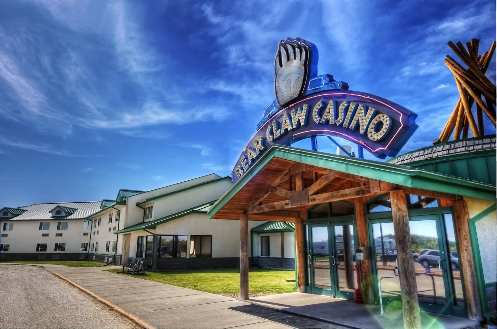
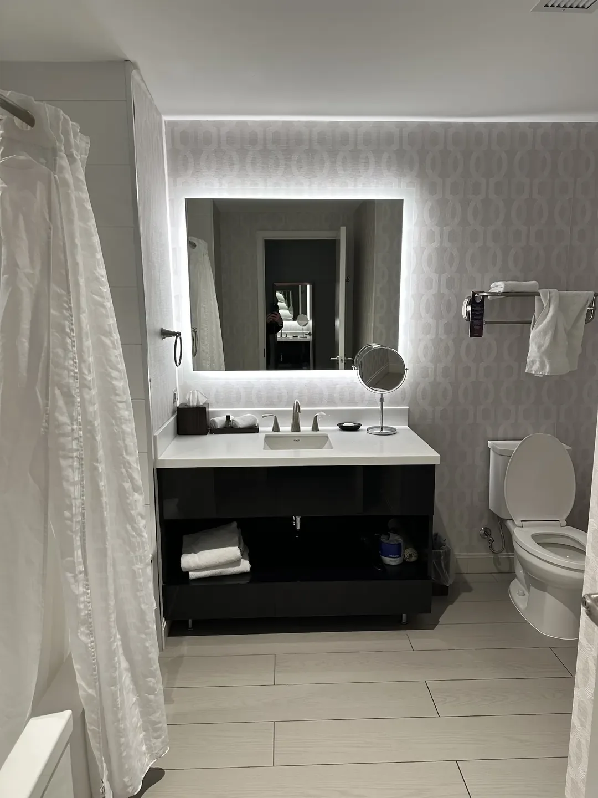
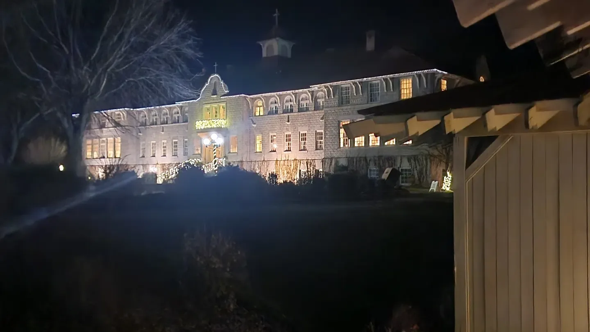
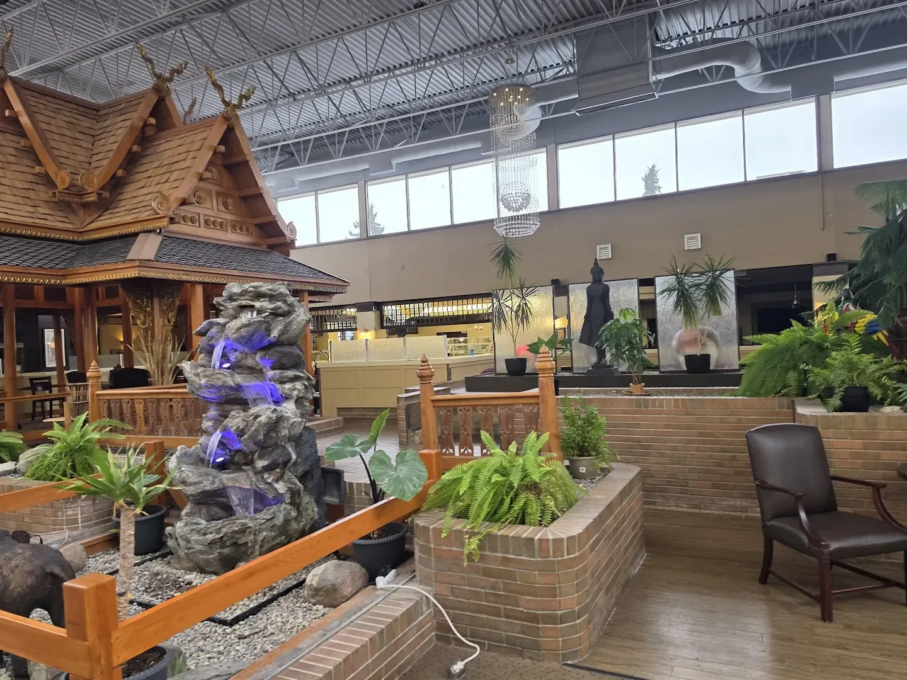

Each entry below is a place to arrive, sleep, eat and look outward — named exactly, located exactly, and described without the noise of a sales pitch.

Bear Claw Casino & Hotel
Carlyle, Saskatchewan, Canada — open country beyond the doors
Out on the prairie edge of Carlyle, arrival feels like stepping off the highway into a quieter register of sky and wind. Guest rooms keep the stay simple and grounded, while dining sits close to the day’s rhythm rather than competing with it. An age-restricted floor is one amenity among the wider hotel experience, set against the open country that frames every window.
What shapes a stay here is the long horizon and the unhurried pace of rural Saskatchewan.

Pickering Casino Resort
Pickering, Ontario, Canada — a full resort setting in the city
In Pickering the resort scale meets a city cadence: you arrive into a full resort setting where corridors, dining rooms and guest floors share one continuous address. Rooms are arranged for overnight ease within that larger complex, and meals gather under the same roof. An age-restricted floor sits among the amenities without defining the whole stay — the city property still reads as a place to rest between the day and the road out again.
What shapes a stay here is resort breadth held inside a city property’s daily pulse.
Century Casino & Hotel Edmonton
Edmonton, Alberta, Canada — a city-centre address
At the centre of Edmonton, the hotel folds into the city’s evening light and morning traffic alike. Arrival is urban and direct; guest rooms offer a quiet floor above the street’s movement, with dining kept within easy reach of the lobby. An age-restricted floor is listed among the amenities, one optional layer inside a city-centre stay that still turns on sleep, supper and the walk back through downtown.
What shapes a stay here is the city centre itself — close, bright, and never far from the door.

St. Eugene Golf Resort & Casino
Cranbrook, British Columbia, Canada — a resort beside the fairways, in a building with a past
Near Cranbrook the resort opens beside a golf course, and the building carries a sense of history in its walls before you ever reach a guest floor. Rooms look out toward fairways and mountain light; dining gathers the day into a slower evening. An age-restricted floor is one amenity among the wider resort experience — the stay itself is shaped as much by the land, the course edge, and the architecture that holds it all.
What shapes a stay here is the resort’s past-bearing fabric set against the open course.

Medicine Hat Lodge, Trademark Collection by Wyndham
Medicine Hat, Alberta, Canada — a full resort set in open country
Outside Medicine Hat the lodge spreads into open country as a full resort address — arrival has room to breathe before the lobby settles you. Guest rooms keep the prairie quiet close at hand, and dining holds the evening without rushing it. An age-restricted floor appears among the amenities as one optional thread; the broader stay is still rooms, tables, corridors and the wide Alberta land beyond the glass.
What shapes a stay here is resort scale measured against open country sky.